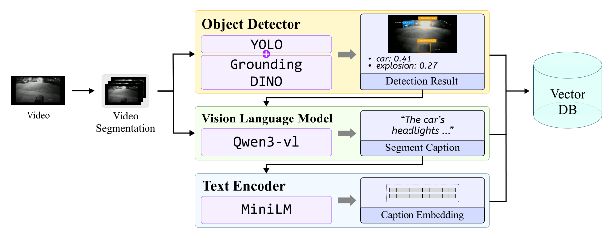
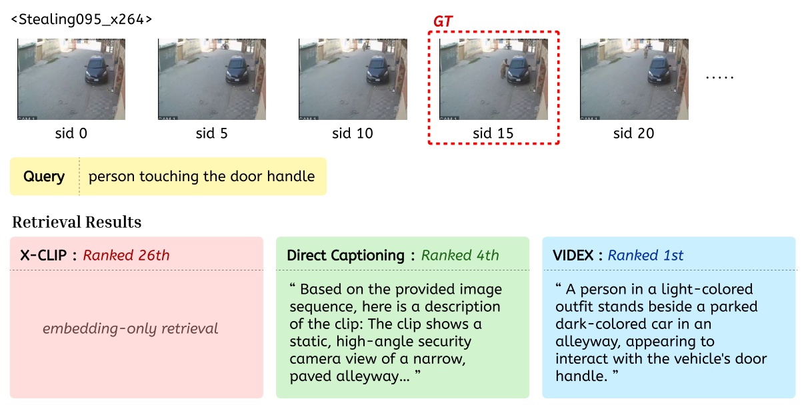

HAIL, Handong Global University · 2025 – 2026 · Team lead
VIDEX
Make hours of CCTV searchable, then answerable with evidence.
Phase 1 · Semantic Indexing
First author · BDMS @ DASFAA 2026 (oral) · to appear (Springer)
- Problem
- Video-text models are trained on short clips. CCTV is long, untrimmed, and events are rare.
- Idea
- Index each segment with a VLM caption grounded on detected objects, then search it with hybrid dense + BM25 retrieval.
- Role
- Research question, method, experiment design, writing, oral talk.

| UCF-Crime, 1,300 queries | Recall@20 |
|---|---|
| X-CLIP | 0.025 |
| InternVideo2 | 0.027 |
| VIDEX, plain caption | 0.076 |
| VIDEX, object-grounded caption | 0.102 |

Phase 2 · Evidence-Guided QA Agent
🏆 1st Place, Capstone Festival 2026
- Problem
- VLMs answer questions about video, but investigators can't verify why.
- Idea
- Seven perception tools run once. A ReAct planner fetches only the evidence it needs and cites the source tool for each claim.
- Role
- Problem definition, agent architecture, evaluation design, team lead.

| SurveillanceVQA-589K (0–5) | Temporal | Avg. |
|---|---|---|
| VLM only | 3.69 | 3.85 |
| VLM + all tool outputs | 2.91 | 3.91 |
| VIDEX Agent | 3.96 | 4.22 |
More evidence isn't better evidence: dumping all tool outputs hurt temporal reasoning.